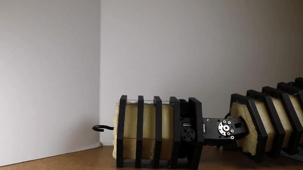
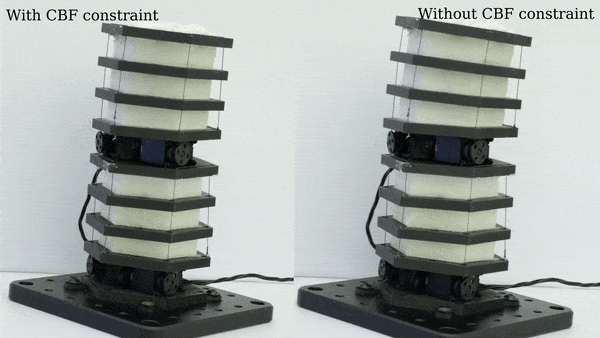
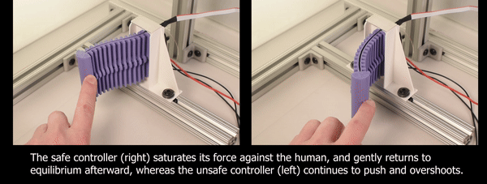

Control of Robots in Uncertain Environments
How should robots imbued with structural flexibility be controlled in order to maximize safety and robustness while also allowing precision? This question motivates by current focus within control, and my lab explores it through a variety of different approaches. While traditional approaches (e.g. impedance control) get us pretty far, we have recently begun to incorporate optimization-based control which can encode the unique physical attributes of our new classes of soft-rigid hybrid robots, allowing us to solve more complex control problems and directly encode notions of safety.
A major motivator for my current work is the apparent contradiction between precision of traditional feedback control and the closed loop compliance of a robotic system. Essentially, as we turn up our proportional control knob to decrease the control error, we reduce the compliance of the system, as seen in the following simple demo.

Had I not removed my finger, the robot would have either crushed my finger or the motors would have burnt out. This means that our cuddly, “safe” soft robot is not so safe when operated with pure feedback control. Thus, for this work we are seeking alternatives.Control Barrier Functions for Soft Robots

Sensorless Fofce Control

Impedance Control

Safe Control with Actuator Saturation

Publications
- Z. J. Patterson, W. Xiao, E. Sologuren, and D. Rus, “Safe Control for Soft-Rigid Robots with Self-Contact Using Control Barrier Functions,” Robosoft, Apr. 2024. Link
- Z. J. Patterson, C. D. Santina, and D. Rus, “Modeling and Control of Intrinsically Elasticity Coupled Soft-Rigid Robots,” ICRA, May 2024. Link
- Z. J. Patterson, E. Sologuren, C. Della Santina, and D. Rus, “Design and Control of Modular Soft-Rigid Hybrid Manipulators with Self-Contact,” Aug. 17, 2024, arXiv: arXiv:2408.09275. Link
- Z. J. Patterson, A. P. Sabelhaus, and C. Majidi, “Robust Control of a Multi-Axis Shape Memory Alloy-Driven Soft Manipulator,” IEEE Robotics and Automation Letters, Apr. 2022. Link
- A. P. Sabelhaus, Z. J. Patterson, A. T. Wertz, and C. Majidi, “Safe Supervisory Control of Soft Robot Actuators,” Soft Robotics, Aug. 2024. Link